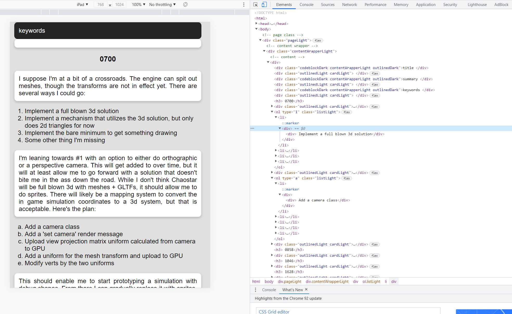

Next up on the list is, well, lists. This one will be a bit different than before, as it will recursively parse the list contents as well.
First will be the addition of a new list chomper.
// parser/md/parse_contents/chomp/mod.rs
mod block;
mod header;
mod list;
pub use block::block;
pub use header::header;
pub use list::list;
Next up is the actual implementation. There were some modifications to other files, but those will be shown later. The main thing to note is there's now an Options struct that can be used for modifying rules while parsing. That is required since the list chomper recursively parses the text for list elements.
// parser/md/parse_contents/chomp/list.rs
use crate::{
parser::md::{
parse_contents::{self, Options, Validations},
ContentIr,
},
Location, Res,
};
pub fn list(
contents: &String,
mut opts: Options,
validations: &Validations,
) -> Option<Vec<ContentIr>> {
let opts = {
opts.make_cards = false;
opts
};
let chars: Vec<char> = contents.chars().collect();
if chars.len() == 0 {
return None;
}
let mut start_idx = None;
let mut end_idx = chars.len() - 1;
let mut stop = false;
let mut items = vec![];
let mut i = 0;
while i < chars.len() {
if stop == true {
break;
}
let c = chars[i];
let can_start = {
if i == 0 {
true
} else {
chars[i - 1] == '\n'
}
};
let make_list = match c {
'*' => true,
_ => {
if i < chars.len() - 1 {
let peeked1 = chars[i + 1];
peeked1 == ')'
} else {
false
}
}
};
if can_start && make_list {
for j in i..chars.len() {
if chars[j] == '\n' {
if let None = start_idx {
start_idx = Some(i);
}
// Add item, mutate rest
items.push(contents[i..j].to_string());
break;
}
}
}
// Stop making the list if it's a new line or not the '*'
else if can_start && start_idx.is_some() {
stop = true;
end_idx = i;
}
i += 1;
}
if items.is_empty() {
return None;
}
if let Some(start_idx) = start_idx {
let (before, after) = contents.split_at(end_idx);
let (before, _) = before.split_at(start_idx);
let mut before_validations = validations.clone();
before_validations.skip_list = true;
// Check if it's a
let list = {
// Trim off the bullet point
let items: Vec<String> = items.iter().map(|i| i.replacen("* ", "", 1)).collect();
// Check if it's ordered
let lowercased_first = items[0].to_lowercase();
if lowercased_first.starts_with("1)") || lowercased_first.starts_with("2)") {
let items = items.iter().map(|i| {
match i.find(')') {
Some(s) => {
map_contents(i[(s + 1)..].to_string(), opts)
},
None => todo!("You have an ordered, alphabetical list that is not well formed! Likely missing a paren."),
}
}).flatten().collect();
// It's numerical
ContentIr::OrderedList {
items,
numeric: true,
}
} else if lowercased_first.starts_with("a)") {
let items = items.iter().map(|i| {
match i.find(')') {
Some(s) => map_contents(i[(s + 1)..].to_string(), opts),
None => todo!("You have an ordered, alphabetical list that is not well formed! Likely missing a paren."),
}
}).flatten().collect();
// It's alphabetical
ContentIr::OrderedList {
items,
numeric: false,
}
} else {
ContentIr::UnorderedList {
items: items
.iter()
.map(|i| map_contents(i.clone(), opts))
.flatten()
.collect(),
}
}
};
return Some(vec![
ContentIr::Unparsed {
contents: before.into(),
validations: before_validations,
},
list,
ContentIr::Unparsed {
contents: after.into(),
validations: validations.clone(),
},
]);
}
None
}
fn map_contents(s: String, opts: Options) -> Vec<ContentIr> {
match parse_contents::execute(
s,
Location {
column: 0,
file: String::default(),
line: 0,
path: String::default(),
},
opts,
) {
Res::Ok(contents) => vec![contents.item],
Res::Warn { item, msg } => todo!("How to handle warnings in lists?"),
Res::Error { location, msg } => todo!("How to handle errors in lists?"),
}
}
The changes to the ContentIr are two new types, and the expansion of the Text element to allow the skipping of cards. That was added since every single list item was surrounded by a card.
// parser/md/parse_contents/content_ir.rs
use crate::html::{
element::{self, ListType},
Element, HtmlElement,
};
use super::Validations;
#[derive(Clone, Debug, PartialEq)]
pub enum ContentIr {
Codeblock(String),
Div {
contents: Vec<ContentIr>,
},
Header {
header_size: u32,
id: Option<String>,
text: String,
},
OrderedList {
items: Vec<ContentIr>,
numeric: bool,
},
Text {
make_card: bool,
text: String,
},
Unparsed {
contents: String,
validations: Validations,
},
UnorderedList {
items: Vec<ContentIr>,
},
}
impl HtmlElement for ContentIr {
fn to_element(&self) -> Element {
match self {
ContentIr::Codeblock(text) => element::code_block(text.clone()),
ContentIr::Div { contents } => {
element::div(contents.iter().map(|ir| ir.to_element()).collect())
}
ContentIr::Header {
header_size,
id,
text,
} => element::header(*header_size, id.clone(), text.clone()),
ContentIr::OrderedList { items, numeric } => element::list(
items.iter().map(|i| i.to_element()).collect(),
if *numeric {
ListType::OrderedNumeric
} else {
ListType::OrderedAlpha
},
),
ContentIr::Text { text, make_card } => element::text(text, *make_card),
ContentIr::Unparsed { .. } => {
todo!("Attempted to convert unparsed content to an element!")
}
ContentIr::UnorderedList { items } => element::list(
items.iter().map(|i| i.to_element()).collect(),
ListType::Unordered,
),
}
}
}
The parse_contents module is updated as well.
// parser/md/parse_contents/mod.rs
mod chomp;
mod content_ir;
use crate::{Item, Location, Res};
pub use content_ir::ContentIr;
pub(crate) enum ContinueRunning {
No,
Yes,
}
#[derive(Clone, Copy, Debug, PartialEq)]
pub struct Options {
pub make_cards: bool,
}
#[derive(Clone, Copy, Debug, PartialEq)]
pub struct Validations {
pub skip_code_block: bool,
pub skip_header: bool,
pub skip_list: bool,
}
pub fn execute(contents: String, location: Location, opts: Options) -> Res<ContentIr> {
// Simplify the newlines
let contents = contents.replace("\r\n", "\n");
// Since this is a recursive processor, executing until nothing remains, set it up so that nothing has
// been processed yet.
let mut ir = vec![ContentIr::Unparsed {
contents,
validations: Validations {
skip_code_block: false,
skip_header: false,
skip_list: false,
},
}];
// Continue processing + reprocessing all elements until there's nothing left.
loop {
let (new_elements, continue_running) = parse(&ir, opts);
ir = new_elements;
match continue_running {
ContinueRunning::Yes => {}
ContinueRunning::No => break,
}
}
Res::Ok(Item {
item: ContentIr::Div { contents: ir },
location: Some(location),
})
}
pub(crate) fn parse(elements: &Vec<ContentIr>, opts: Options) -> (Vec<ContentIr>, ContinueRunning) {
let mut new = vec![];
let mut continue_running = ContinueRunning::No;
for element in elements {
match element {
ContentIr::Unparsed {
contents,
validations,
} => {
// Attempt to process something.
// If something was found, add it to the end and keep going.
if let Some(mut ir) = try_process(contents, opts, validations) {
new.append(&mut ir);
continue_running = ContinueRunning::Yes;
}
// Nothing matched, so return it as text.
else {
new.push(ContentIr::Text {
make_card: opts.make_cards,
text: contents.clone(),
});
}
}
_ => {
new.push(element.clone());
}
}
}
(new, continue_running)
}
/// Attempts to process the contents, stepping through the various types until nothing is left.
fn try_process(
contents: &String,
opts: Options,
validations: &Validations,
) -> Option<Vec<ContentIr>> {
// Do these in priority.
// New things that are added should be processed here.
let mut validations = validations.clone();
if !validations.skip_code_block {
if let Some(ir) = chomp::block(contents, &validations) {
return Some(ir);
} else {
validations.skip_code_block = true;
}
}
if !validations.skip_header {
if let Some(ir) = chomp::header(contents, &validations) {
return Some(ir);
} else {
validations.skip_header = true;
}
}
if !validations.skip_list {
if let Some(ir) = chomp::list(contents, opts, &validations) {
return Some(ir);
} else {
validations.skip_list = true;
}
}
None
}
I'll add a new class for the Stylesheet.
// html/stylesheet/class.rs
use super::Html;
use super::*;
use crate::theme::Theme;
pub use css::Css;
pub use selector::Selector;
#[derive(Debug, Clone, PartialEq)]
pub enum Class {
Card { dark_mode: bool },
Codeblock,
ContentWrapper,
List,
Outlined { dark_mode: bool },
Page,
}
impl Class {
pub fn all() -> Vec<Self> {
vec![
Self::Card { dark_mode: false },
Self::Card { dark_mode: true },
Self::Codeblock,
Self::ContentWrapper,
Self::List,
Self::Outlined { dark_mode: false },
Self::Outlined { dark_mode: true },
Self::Page,
]
}
pub fn css(&self, theme: &Theme) -> Css {
match self {
Self::Card { dark_mode } => card(self, *dark_mode, theme),
Self::Codeblock => codeblock(self, theme),
Self::ContentWrapper => content_wrapper(self),
Self::List => list(self),
Self::Outlined { dark_mode } => outline(self, *dark_mode, theme),
Self::Page => page(self),
}
}
pub fn dark_mode(&self) -> bool {
match self {
Self::Card { dark_mode } => *dark_mode,
Self::Codeblock => true,
Self::ContentWrapper => false,
Self::List => false,
Self::Outlined { dark_mode } => *dark_mode,
Self::Page => false,
}
}
pub fn selector(&self) -> Selector {
let prefix = match self {
Class::Card { .. } => "card",
Class::Codeblock => "codeblock",
Class::ContentWrapper => "contentWrapper",
Class::List => "list",
Class::Outlined { .. } => "outlined",
Class::Page => "page",
};
let post_fix = match self.dark_mode() {
false => "Light",
true => "Dark",
};
format!("{}{}", prefix, post_fix).into()
}
}
...
fn list(class: &Class) -> Css {
let main_rules = vec![
"display: flex".into(),
"flex-direction: column".into(),
"align-content: left".into(),
"text-align: left".into(),
];
let main_class = format!(
".{} {{ {} }}",
class.selector().to_str(),
combine_rules(main_rules)
);
format!("{}", main_class).into()
}
...
And finally the Element module is updated to build the lists. The Text element is updated to make card generation optional.
// html/element.rs
...
impl Html for Element {
fn to_html(&self) -> String {
let class = {
if self.classes.is_empty() {
String::default()
} else {
format!(
"class=\"{}\"",
self.classes
.iter()
.map(|c| c.selector().to_str().into())
.collect::<Vec<String>>()
.join(" ")
)
}
};
let selector;
let children;
let mut attributes: Option<String> = None;
match &self.kind {
Kind::Card(contents) => {
selector = String::from("div");
children = contents.clone();
}
Kind::Codeblock(text) => {
selector = String::from("div");
children = text.clone();
}
Kind::Div {
children: child_elements,
} => {
selector = String::from("div");
children = child_elements
.iter()
.map(|c| c.to_html())
.collect::<Vec<String>>()
.join("\n");
}
Kind::Header { header_size, text } => {
selector = format!("h{}", header_size);
children = text.clone();
}
Kind::List { items, list_type } => {
let (s, attr) = match list_type {
ListType::OrderedAlpha => (String::from("ol"), Some("type=\"a\"".into())),
ListType::OrderedNumeric => (String::from("ol"), Some("type=\"1\"".into())),
ListType::Unordered => (String::from("ul"), None),
};
attributes = attr;
children = items
.iter()
.map(|e| e.to_html())
.map(|e| format!("<li>{}</li>", e))
.collect();
selector = s;
}
}
let attributes = match attributes {
Some(s) => s,
None => String::default(),
};
format!(
"<{} {} {}>{}</{}>",
selector, attributes, class, children, selector
)
}
}
#[derive(Clone, Debug, PartialEq)]
pub enum Kind {
Card(String),
Codeblock(String),
Div {
children: Vec<Element>,
},
Header {
header_size: u32,
text: String,
},
List {
items: Vec<Element>,
list_type: ListType,
},
}
#[derive(Clone, Debug, PartialEq)]
pub enum ListType {
OrderedAlpha,
OrderedNumeric,
Unordered,
}
...
pub fn list(items: Vec<Element>, list_type: ListType) -> Element {
Element {
classes: vec![Class::List],
id: None,
kind: Kind::List { items, list_type },
}
}
pub fn text(s: &str, make_card: bool) -> Element {
let classes = match make_card {
true => vec![
Class::Outlined { dark_mode: false },
Class::Card { dark_mode: false },
],
false => vec![],
};
Element {
classes,
id: None,
kind: Kind::Card(s.into()),
}
}
Here's the render:
